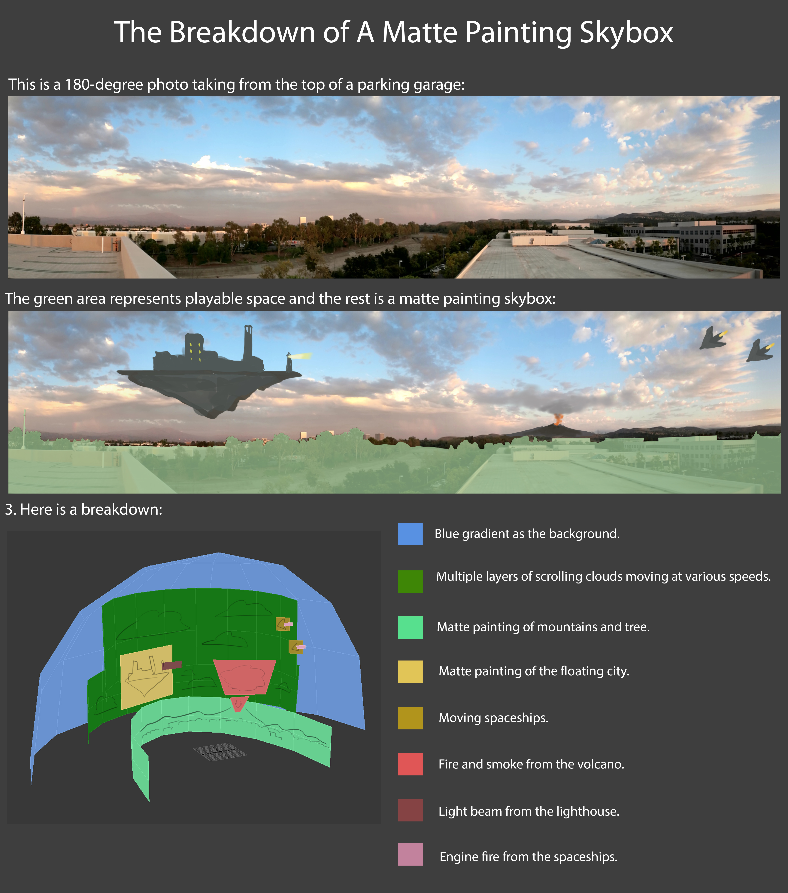

Sky
Skybox 메쉬 형태
-
Cube, Sphere, HemiSphere, Ring, Plane
-
유니티 Shader별 사용 메쉬 형태
| Shader | Mesh | draw |
|---|---|---|
| Mobile/Skybox | Cube | Draw(6) * 6 |
| Skybox/6 Sided | Cube | Draw(6) * 6 |
| Skybox/Cubemap | Sphere | Draw(5040) |
| Skybox/Panoramic | Sphere | Draw(5040) |
| Skybox/Procedural | Sphere | Draw(5040) |
-
렌더독으로 본 유니티의 Sphere Sky Mesh
- 일반 Sphere 와는 다르게, 버텍스 갯수는 적게 그리고 수평선 부분이 조금 디테일에 힘을 줬다.

유니티 Skybox셰이더 작성시 주의점
- 유니티 Skybox 설정 :
Window > Rendering > Lighting > Environmentunity_SpecCube0가 위에서 설정된 메테리얼로 스카이박스를 렌더링함.(Camera > Background Type과는 상관없음)
- URP 환경이라도 Built-in(legacy)의 기본 Pass의 태그값
"LightMode" = "ForwardBase"로 하여야만 동작한다.
유니티의 Skybox
- 유니티에서는 Skybox의 메쉬를 지정할 수 있는 방법이 없다.(2021.09.23 기준)
- 유니티 Skybox 설정을 안따르면 ReflectionProbe(unity_SpecCube0)를 다루기 껄끄러워진다.
Window > Rendering > Lighting > Environment > Environment Reflections > Source > Custom으로 처리 가능.
Skybox 메쉬 조합
구름을 표현하기 위해 돔형태의 메쉬, 링형 매쉬, 평면 매쉬를 이용했다.


Case Study
half daytimeGradient = max(0, L_Sun.y); // 낮시간 변화 // max(0, dot(-L, DIR_DOWN));
half skybox_MidTopGradient = max(0, -V.y); // 하늘쪽 변화 // max(0, dot(-V, DIR_UP));
half skybox_HorizBottomGradient = pow(1 - skybox_MidTopGradient, 8); // 바닥 + 수평 변화
// 낮시간 하늘의 3단계 변화
// - 카메라가 스카이박스 안쪽에 있으니 `-V`를 시켜주고, 하늘(Up)쪽으로 변화를 넣는다.
// - 수평선은 역으로해서 역변화를 얻음.
half3 daytimeSkyMiddleColor = lerp(_SkyColor_Sunset, _SkyColor_DaytimeMiddle, daytimeGradient);
half3 daytimeSkyMiddleBottomColor = lerp(daytimeSkyMiddleColor, _SkyColor_DaytimeBottom, skybox_HorizBottomGradient);
half3 daytimeSkyGradientColor = lerp(daytimeSkyMiddleBottomColor, _SkyColor_DaytimeTop, skybox_MidTopGradient);
// 밤낮을 표현하기 위해 빛이 땅을 바라볼때 변화량([0, 1]) 이용.
half3 skyNightDayColor = lerp(_SkyColor_Night, daytimeSkyGradientColor, daytimeGradient);
// 빛이 바라보는 반대 방향에 해를 위치 시킨다.
half sunGradient = dot(-L_Sun, V);
half sun = pow(sunGradient, 20);
// 노을의 빛의 퍼짐을 표현하기 위해, 노을색과 붉기를 조절한 빛의 색을 섞는다.
half _SunsetRedness = 0.5; // [0, 1]
half invRedness = 1 - _SunsetRedness;
half3 redishLightColor;
redishLightColor.r = IN.colorLight.r;
redishLightColor.g = IN.colorLight.g * invRedness;
redishLightColor.b = IN.colorLight.b * invRedness * 0.5;
half3 sunsetColor = lerp(_SkyColor_Sunset, redishColor, sun);
// 해 위치를 빛 방향과 같게 조정하면
// 케릭터에 조명효과를 다르게 주고 싶어 불가피하게 빛 방향을 바꿔 버리면,
// 의도치 않도록 해 위치가 바뀌어 버릴 수 있다.
_ControlledDaytime // [0, 1]
#define TWO_PI 6.28318530717958647693 // com.unity.render-pipelines.core/ShaderLibrary/Macros.hlsl
#define SHORT_TWO_PI 6.2831853
half rad = _ControlledDaytime * SHORT_TWO_PI;
half s;
half c;
sincos(rad, s, c);
OUT.L_Sun.x = -c;
OUT.L_Sun.y = s;
OUT.L_Sun.z = 0;
| | 0 | 90 | 180 | 270 | 360 |
| --------------------- | --- | ---- | --- | ---- | ------ |
| _ControlTime | 0 | 0.25 | 0.5 | 0.75 | 1 |
| _ControlTime x TWO_PI | 0 | | PI | | TWO_PI |
| x (-cos) | -1 | 0 | 1 | 0 | -1 |
| y (sin) | 0 | 1 | 0 | -1 | 0 |
기타 코드 조각들
// ref: [mapping texture uvs to sphere for skybox](https://gamedev.stackexchange.com/questions/189357/mapping-texture-uvs-to-sphere-for-skybox)
// ref: [Correcting projection of 360° content onto a sphere - distortion at the poles](https://gamedev.stackexchange.com/questions/148167/correcting-projection-of-360-content-onto-a-sphere-distortion-at-the-poles/148178#148178)
uv.x = (PI + atan2(positionWS.x, positionWS.z)) * INV_TWO_PI;
uv.y = uv.y * 0.5 + 0.5
// ref: [ARM - The Ice Cave demo](https://developer.arm.com/documentation/102259/0100/Procedural-skybox)
half3 _SunPosition;
half3 _SunColor;
half _SunDegree; // [0.0, 1.0], corresponds to a sun of diameter of 5 degrees: cos(5 degrees) = 0.995
half4 SampleSun(in half3 viewDir, in half alpha)
{
// 원형 해
half sunContribution = dot(viewDir,_SunPosition);
half sunDistanceFade = smoothstep(_SunDegree - (0.025 * alpha), 1.0, sunContribution);
half sunOcclusionFade = clamp(0.9 - alpha, 0.0, 1.0);
half3 sunColorResult = sunDistanceFade * sunOcclusionFade * _SunColor;
return half4(sunColorResult, 1.0);
}
// ['Infinite' sky shader for Unity](https://aras-p.info/blog/2019/02/01/Infinite-sky-shader-for-Unity/)
// 유니티는 "reversed-Z projection"을 이용하지만, "infinite projection"은 아니다
#if defined(UNITY_REVERSED_Z)
// when using reversed-Z, make the Z be just a tiny
// bit above 0.0
OUT.positionCS.z = 1.0e-9f;
#else
// when not using reversed-Z, make Z/W be just a tiny
// bit below 1.0
OUT.positionCS.z = o.positionCS.w - 1.0e-6f;
#endif
TODO
Ref
- Unity's built-in Skybox-Procedural.shader
- 마른 하늘에 날구름 넣기
- [TA] 테라에 사용된 렌더링 테크닉 - 임신형 (valhashi)
- Procedural Skybox - Evan edwards
- EasySky: Breakdown of a Procedural Skybox for UE4
- GDC2014 - Moving the Heavens: An Artistic and Technical Look at the Skies of The Last of Us
- Reaching for the stars - Let’s create a procedural skybox shader with Unity’s Shader Graph!
- Unity ShaderGraph Procedural Skybox Tutorial
- Rastertek's Terrain Tutorial
- Creating a unique animated sky shader for UT3/UDK - Cr4zys_Cloud_Textures.rar
- Maya - Skydome Techniques
- Unity Assets
- https://simul.co/
- https://github.com/shadowlenz/Procedural.SkyBox
- https://github.com/SebLague/Clouds
- https://guildofwriters.org/wiki/Adding_Atmosphere
- Volumetric Clouds – 体积云的做法
- 천체리소스 : https://pngtree.com/so/celestial
- ShaderX3 Advanced Rendering with DirectX and OpenGL
- 8.4 Volumetric Clouds
- ShaderX2 Shader Programming Tips and Tricks with DirectX 9
- Advanced Sky Dome Rendering